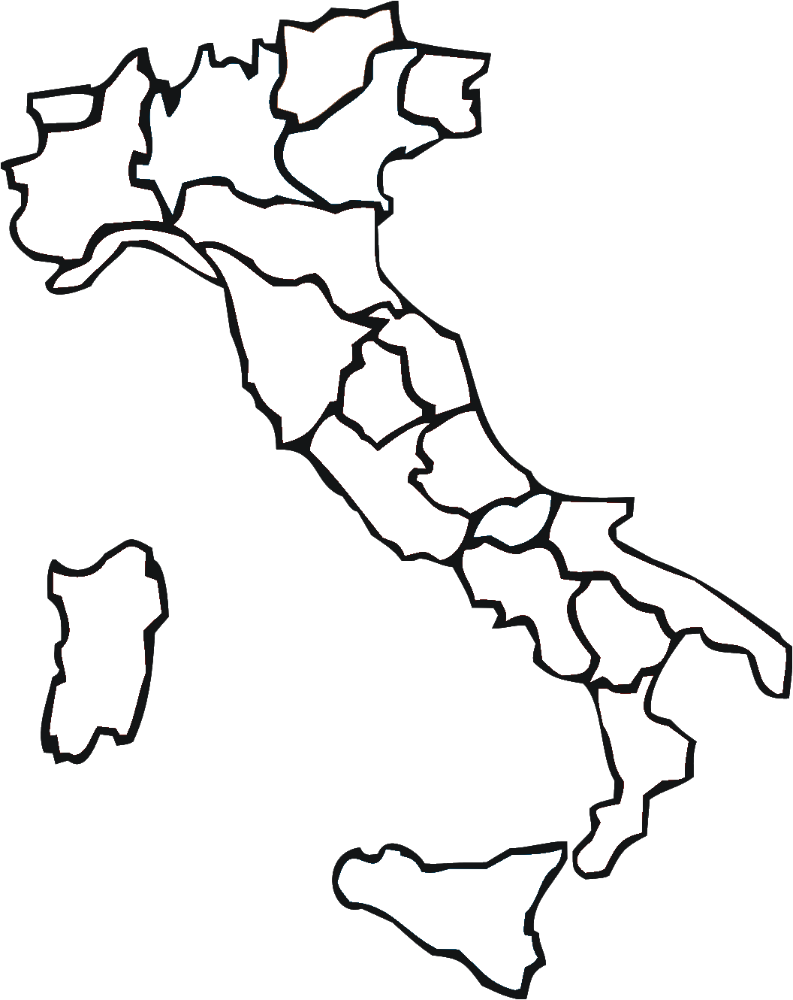

Lorenzo Fossa
Nazionalità: Italiana
Sesso: Maschile
Contatti
Via Tigullio 3, 16148 Genova, Italia
Email: lorenzo2004.lf@gmail.com
Telefono: (+39) 3498077093
Presentazione
Sono un appassionato di informatica, specialmente per quello che riguarda la creazione e lo sviluppo di un sito web. Durante l'ultimo anno di superiori ho realizzato un progetto per l'esame che prevedeva la creazione di un sito web con riportate le nostre esperienze PCTO, realizzato in HTML e CSS e hostato su Altervista. Ora sto frequentando un corso ITS "IOT Developer" con lo scopo finale di specializzarmi nell'ambito informatico.
In generale mi piace impegnarmi per risolvere problemi di tipo pratico, tramite soluzioni creative.
Istruzione e Formazione

-
10/11/2023 – Attuale
Diploma Superiore Accademia Digitale Liguria
Accademia Digitale Liguria
Livello EQF: Livello 5 EQF -
14/09/2018 – 09/06/2023
Diploma di quinta superiore Istituto "E. Montale"
Istituto E. Montale
Campo di studio: Informatica ed Economia
Voto finale: 98
Certificazioni
- ★ ICDL Full Standard
- ★ Cisco IT Essential
- ★ Corso Gestionale 1 Zucchetti
- ★ Certificazione Inglese B2
Competenze Digitali
- HTML, CSS, PHP, MySQL
- JavaScript, Java, C#, C
- Linux, Windows
- Pacchetto Office (Word, Excel, PowerPoint ecc.)
Competenze Linguistiche
Lingua Madre: Italiano
Altre Lingue: Inglese Livello B2
Patente di Guida
A1, B